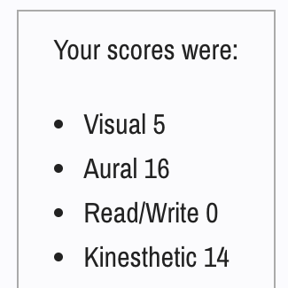
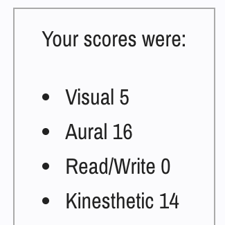

Profile
Our team is a ragtag international group of people from various countries.
Nayli, the creative free spirit who likes to crochet and learn to skateboard in her spare time. She enjoys all things horror and cannot get enough of it. She likes making floral arrangements and bouquets and spends too much time rewatching the same sitcom over and over again.
Melanie, the brains, she is currently in her final year of Psychology (applied sciences). She has taken a break from all the psychological mumbo jumbo to take up an IT elective to join us in Introduction to IT for some creative freedom and fun.
Julie, the quiet, mysterious one. She is a shy one with not much to say but you can bet that she is brimming with ideas and suggestions to further boost our projects as they come.
Yu-Cheng (Jacky), the lovable goofball who is always down to hang out, you will find him out and about with friends or travelling to wherever his heart desires (Travel pending due to COVID).
And then there’s Kelvin, an introverted recluse (94% introversion according to the 16 Personalities test!!) who fancies his spare time playing video games and spending time with his missus. He is often bogged down in a full schedule of work, university and assignments so does not get too much time to play games anymore. But you best believe that if he finds some spare time he will be playing.
Nayli (s3882267)
link to personal websiteIntroduction
I'm in my first semester of the Bachelor’s in Information Technology program and am currently based in Malaysia right now as the Australian borders haven’t opened for international students. I come from a Malay, Chinese and Japanese background and I’d like to believe that I’ve done well in keeping in touch with my cultural roots and integrating them into my life. My hobbies include crocheting, reading, journaling and watching horror movies. I also like analyzing the horror media afterwards, especially since horror reflects the current fear and paranoia the society is facing.
I have quite limited IT experience, as I only did basic C programming before, as well as Computer Principles - learning about the software and hardware of a computer. However, I’m interested in learning more and would like to master a number of programming languages during my degree in RMIT. My interests in IT are quite broad but mostly revolve around topics which require data analysis. I’m interested in algorithms, machine learning as well as technology-integrated fashion.
Personality Tests
These test results can be helpful to the team composition as it provides a clear overview of my strengths and weaknesses. The results can help determine my position in the group and allow me to challenge myself by participating in activities that I can improve on such as being more empathetic and understanding of my team members. Since my team is aware of my weaknesses, they can also inform me when I am not being as effective or patient as I should be. This can also help reduce group conflict and maximize productivity.
Melanie (s3708323)
link to personal websiteIntroduction
I am in my final semester of Bachelor of Applied Science (Psychology). I am Chinese by ethnicity and was born in Malaysia then moved to Singapore when I was 11. I enjoy reading, going to the gym and cooking in my free time. I have no IT experience. I think there's always added value when you learn new things, especially outside of your usual area of expertise. As I am studying psychology, we don't learn anything IT related. I can definitely see the value of IT in terms of creating a mental health app, or even my own website for clinical practice and even how psychology can inform IT in terms of personalization in user experience.
Personality Tests
These test results could help the group understand how and why I go about things a certain way, which would reduce misunderstandings. It also increases efficiency as everyone in the group understands each other's learning styles and personalities.
Shuyun (s3845796)
link to personal websiteIntroduction
I am an IT beginner who is in her second year at RMIT, which means that I still have a lot of things to learn in IT. My given name is ShuyunLi and I am Chinese. Due to Covid, 2021 is also my second year in China doing online classes. Therefore, I am looking forward to coming back to the RMIT campus. I graduated from Elwood college, my main research was on language, I studied Japanese for 2 years when I was in high school. I enjoy music, cooking, pc games and love to meet new friends. I have a pet dog, named Zhuanzhuan. While preparing for my college entrance examination, I developed an interest in IT through my math teacher who is a graduate of the IT program. I am drawn to IT as it is a high-paying profession. More importantly, the IT industry covers a wide range of jobs in various industries. I chose RMIT because my agent told me that RMIT has a long history and has an excellent IT teaching team and program. I wanted to challenge myself by studying something new, so I chose RMIT’s IT program. Also, the city campus is near my apartment. I hope I can learn more about IT through my degree at RMIT.
Personality Tests
My disadvantage is excessive perfectionism, accepting only the superficial phenomena of things and ignoring the possibility of deeper meaning, difficulty to make decisions, difficulty making long-term plans and a lack of social skills.
My advantages are the capacity for empathy and compassion, ISFP’s are good at being listeners and imitating. I am always enthusiastic, loyal, attentive to details, (especially those related to others), thoughtful, knowing what is required of me and a good team player, careful analysis of risks and an open mind to consider multiple solutions.
Kelvin (s3283521)
link to personal websiteIntroduction
30-year-old guy in his first year of IT. Born and raised in Melbourne Australia. Love video games and turning off my brain to watch random YouTube videos and random shows on the various streaming platforms available. I also love the great outdoors, but I prefer solo travels, I used to drive around with a tent, a fishing rod, and some bait to go fishing in random remote locations. But my car these days is pretty messed up. My reverse gear doesn’t engage unless I sit there for at least 20 seconds, so reverse parallel parking is out of the question. My car also constantly stalls, at no fault of my own, as it is an auto. Why it stalls is beyond me, so I don’t really drive much anymore. Sadly, my IT experience only goes as deep as physically building a PC. Coding and scripting are currently beyond my scope, though I am learning them as best as I can. My main interest in IT is basically the inner workings of machines, coding, scripting and the unseen work that goes into making any program a program. How everything just comes together in the end is what fascinates me with IT.
Personality Tests
These tests can be helpful in assisting to find likeminded individuals to work with in a group environment. However, my introversion score is...so high. My fear is that these tests will also make people reject me as a valid candidate for their groups. At least I’m emotionally stable I suppose, so I’m not that beat up about this whole thing.
Yu-Cheng (s3878874)
link to personal websiteIntroduction
My name is Yu-Cheng Lai, and I was born in 2000 in Taiwan. I am currently a student of Bachelor of Information Technology at RMIT in Australia. Most of my time, I enjoy music and various forms of performing arts because I enjoy performing myself. I love making friends from around the world, but I can also be a little shy sometimes. I discovered my interest in IT and programming at the age of 19. I have little knowledge and experience in IT since I began exploring much later than many people in this same field. I’m now learning much more IT knowledge at RMIT and during my own time to work towards my ideal job, an IT administrator or a software manager.
Personality Tests
 

These tests allow me to look in depth of who I am from a whole new perspective. I can see that I am strong in people mastery and learning with audio and practicing. These parts of me help me find people who are similar to me and work in teams in order to achieve the same goals. On the other hand, it highlighted my weakness in rational thinking, which implies that I need to chill sometimes.